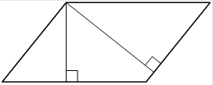

Впишите правильный ответ.
Стороны параллелограмма равны 24 и 27. Высота, опущенная на меньшую из этих сторон, равна 18. Найдите высоту, опущенную на бо́льшую сторону параллелограмма.

КЭС: 7.1 Фигуры на плоскости
Тип ответа: Краткий ответ
Источник ФИПИ